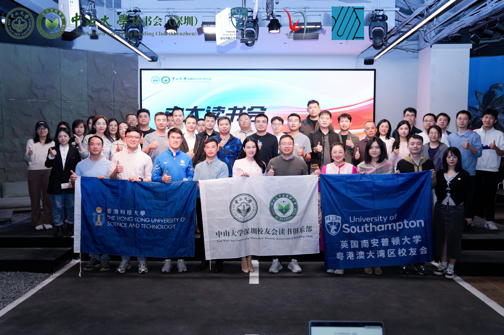

在这个充满不确定性的时代，我们似乎总是在寻找“确定性”的锚点。
市场的波动、周期的轮转、信息的洪流，常让人感到身处迷雾。有人在追逐浪潮中疲惫不堪，也有人选择停下脚步，在经典与逻辑中重新校准方向。所谓的“投资”，本质上不是关于财富的简单博弈，而是对客观规律的尊重，以及对自我人性的深度洞察。
中山大学深圳读书会主办的 light 系列第四期活动邀请了三位身处投资一线的校友嘉宾，从认知重塑、内在修养到体系构建，复盘他们如何在变幻的周期里，建立起一套逻辑自洽的“导航系统”。
逻辑是投资体系的底层操作系统
计算机科班出身、拥有20余年行业经验的王总，身上有着理工男特有的严谨与清醒。在他看来，投资不是拍脑袋的艺术，而是一场关于逻辑的精密计算。
世界观决定收益率：王总认为，投资体系的形成始于个人的世界观。是对大国崛起的乐观支撑，还是对风险溢价的悲观规避，这决定了你翻开行情软件时的第一反应。

寻找“自洽”的边界：很多人的痛苦源于“既要、又要、还要”。王总强调，一套成熟的体系必须有明确的边界——明确你的目标、认知范围与资源极限。当你的投资行为让你感到“游刃有余”且心理舒适时，才算达成了真正的自洽。
“如果投资体系存在 bug，市场迟早会让你交学费。”
进化是永恒的命题：在量化交易与自媒体情绪齐飞的今天，传统的套路正不断被挑战。王总建议，要学会在逆向思维中寻找机会，保持怀疑，更要保持迭代的勇气。
在经典中寻找穿越时间的“安全边际”
从京东互联网产业跨界到私募证券投资基金，张总选择在价值投资的圣经——《聪明的投资者》中寻找底层答案。他用极简的逻辑，拆解了价值投资的认知真相。
投资与投机的分水岭：投资是以深度分析为基础，确保本金安全并获得适当回报。张总犀利地指出，很多散户在牛市顶点入场却自称“投资者”，本质上是在参与一场连规则都没看清的博弈。

安全边际的三个原则：不爆仓、不破产、不支付过高的价格。他提醒大家，真正的安全边际来源于数据、逻辑和实际经历的相互印证。
对抗预测的诱惑：格雷厄姆的思想核心之一就是“不轻易做预测”。张总分享到，预测7-10年的增长率，哪怕1%的误差都会导致估值的巨大偏差。与其沉迷于做不准的预言家，不如做一个守株待兔的聪明人，买得足够便宜，等待价值回归。
投资是一场关于“自我修养”的长跑
作为公募基金经理和财经畅销书作者，赵师兄将投资视角从技术层面拉升到了“人”的维度。他认为，想要在投资路上走得远，知识结构的广度与个人修养的深度缺一不可。
多重身份的融合：赵师兄形容投资人是“农民、科学家与战士”的结合。要像农民一样勤恳耕耘、静待花开；像科学家一样严谨实验、构建模型；更要像战士一样在残酷的市场博弈中保持定力。

打破“知易行难”的魔咒：每个人都知道长期主义，但没几个人能忍受3-5年的静默期。赵师兄提到，投资的价值观往往是“奢侈品”，需要时间去兑现。他建议投资者要学会区分“市场的钱”和“自己的钱”，在赚钱时保持冷静，在亏损时敢于穿越低谷。
研究向投资的转化：一篇好的研究报告是“一流的故事，二流的模型”。他鼓励大家建立一套完整的投研框架：传统行业看供给，新兴行业看需求。通过对常识的坚守，打通股票投资与基金投资的思维牢笼。
“贝塔是时代的礼物，阿尔法是认知的复利。”
坐标之外：做自己人生的“首席执行官”
三位嘉宾的分享，虽然侧重点不同，但最终都指向了一个核心：在纷繁复杂的世界中，找回思考的主动权。穿越周期的力量，并不来自于某种百战百胜的秘籍，而来自于你在经历无数次波动后，依然能够坦然面对内心的那份“笃定”。无论是在股市中博弈，还是在人生中创业，我们都是自己命运的航海家。
